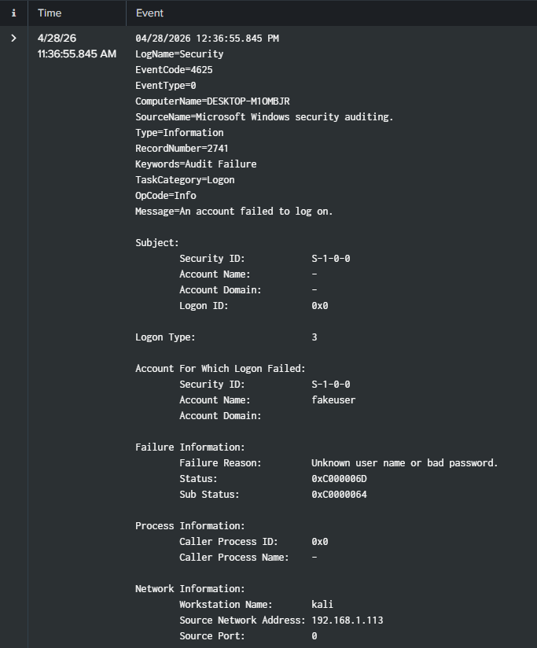

Projects
Hands-on cybersecurity projects focused on SIEM monitoring, threat detection, and real-world attack simulation.
Splunk SIEM Lab – Brute Force Detection
Designed and implemented a SIEM-based detection workflow to identify brute-force login attempts using Windows Security logs.
Lab Overview
- Deployed Splunk on Ubuntu Server
- Configured Windows log forwarding using Universal Forwarder
- Simulated brute-force attacks from Kali Linux
- Generated multiple failed login attempts (EventCode 4625)
Detection Logic
Identified suspicious authentication patterns by analysing repeated failed login attempts from a single source IP.
index=* sourcetype=WinEventLog:Security EventCode=4625
| stats count by Source_Network_Address, Account_Name
| sort - count
Investigation Process
- Detected multiple failed login attempts within a short time frame
- Identified attacker IP address (192.168.1.113)
- Correlated events with targeted user accounts
- Confirmed brute-force behaviour based on repetition patterns
Log Evidence

Outcome
- Successfully detected simulated brute-force attack
- Visualised attack trends using Splunk dashboards
- Developed understanding of SOC alert triage workflow

Dashboard showing failed login attempts over time and top attacking IP addresses.